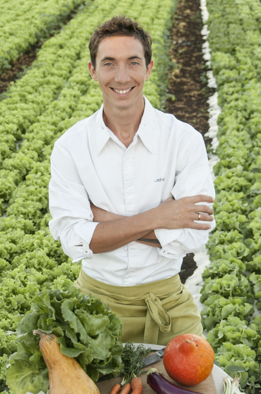
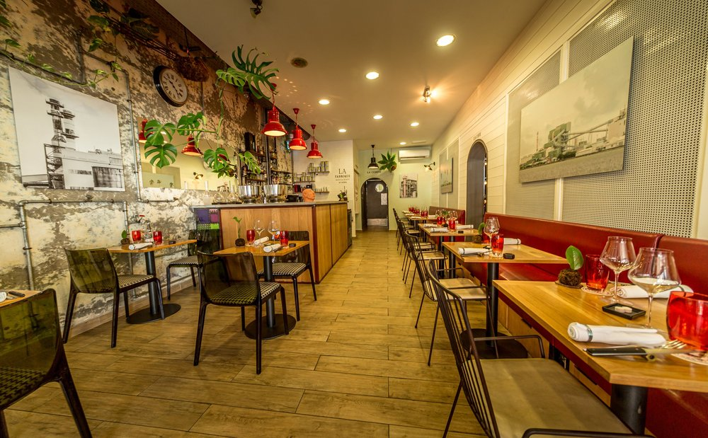

Restaurant La Fabrique
par Chef Jehan Colson
Une cuisine 100 % locale, des produits du marché et une cave de vins naturels soigneusement sélectionnés — pour une expérience culinaire réunionnaise authentique.

Une cuisine réunionnaise
authentique et locale
Ancien du Palm Hotel et du restaurant Le Makassar, le Chef Jehan Colson a forgé son identité culinaire au fil des années en sublimant les produits de son île. À La Fabrique, chaque assiette raconte une histoire, celle de La Réunion et de ses terroirs.
Dans un cadre convivial et chaleureux au cœur de Saint-Denis, le chef et son équipe vous accueillent pour un voyage gastronomique fondé sur les saisons, le respect du produit et la créativité. Ici, tout vient de l'île ou presque.
L'univers culinaire
du Chef Colson
La Fabrique, c'est avant tout un lieu de partage autour d'une table. Le Chef Jehan Colson et son équipe composent des menus du marché qui célèbrent la richesse de la gastronomie réunionnaise, revisitée avec finesse et modernité.
À cela s'ajoute une cave de vins naturels soigneusement sélectionnés, pour accompagner chaque plat dans le respect des traditions et de la terre. Une approche sincère, engagée, et savoureuse.

Au cœur de
Saint-Denis
Situé au 76 rue Pasteur dans le centre de Saint-Denis, La Fabrique est facilement accessible depuis les principaux axes de la ville. Plusieurs parkings publics se trouvent à proximité pour faciliter votre venue.
Quand nous rendre visite
Nous vous accueillons du mardi au samedi. Réservation recommandée pour garantir votre place.
Cuisine ouverte jusqu'à 14h00
Cuisine ouverte jusqu'à 21h00
Profitez des autres jours !
Vous souhaitez organiser un événement privé ou un repas de groupe ? Contactez-nous directement pour un devis personnalisé.